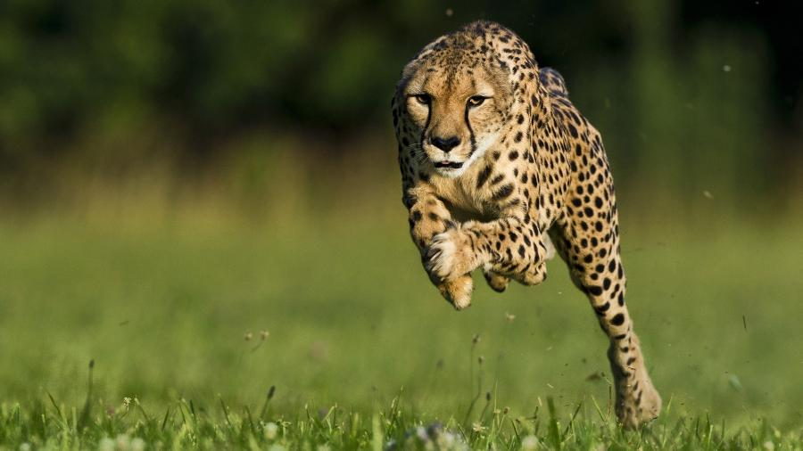
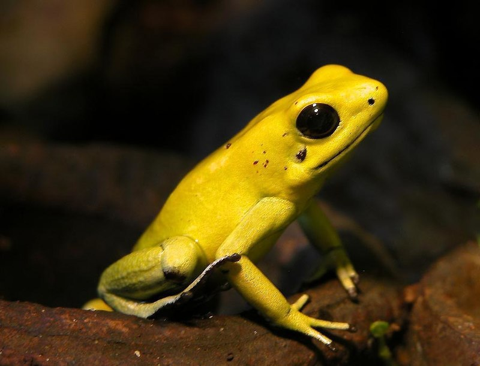

O animal terrestre mais rápido do mundo

O Guepardo é considerado o animal terrestre mais rápido do mundo, atingindo até 110 km/h, segundo a Cheetah Conservation Fund,
organização fundada na Namíbia com o objetivo de conservar esse animal na natureza.
O animal terrestre mais forte do mundo

O Elefante-Africano é considerado o animal terrestre mais forte do mundo em força absoluta. A tromba é seu principal instrumento e
pode levantar cerca de 350 kg com facilidade. Além disso, com seus troncos poderosos, eles podem carregar até 9 toneladas nas costas
e derrubar árvores.
O animal vertebrado mais venenoso do mundo

O Sapo Phyllobates terribilis é considerado um dos animais mais tóxicos da Terra.
Um único espécime de cinco centímetros tem veneno suficiente para matar dez pessoas em idade adulta.
O povo indígena emberá, da Colômbia, há séculos utiliza o poderoso veneno em suas zarabatanas durante a caça.